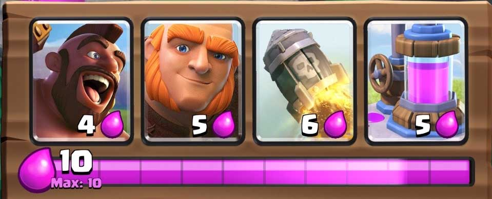
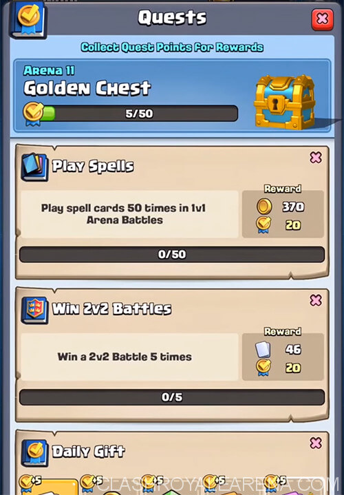

Clash Royale is a strategic multi-player mobile game developed and published by Supercell. The game draws inspiration from various other game archetypes. It combines parts from card games, tower defense, and multi-player on-line duels. The game was released globally on March 2, 2016. The game became extremely popular in the Supercell franchise and reached $1 million in revenue in less than a year.
*please read 'Gameplay' before proceeding*
To understand the card mechanics of Clash Royale, you must understand how the in-game currencies work. The main in-game currency is Elixir. Elixir is only used while playing another player, and the main use for it is to place down cards, at a cost. Every card in the game has an elixir cost, and this number notes how much elixir you must spend in a battle to deploy that card. Each player has an elixir reserve which regenerates at a constant speed and has a maximum capacity of 10 elixir. The other currencies are Gold and Gems. Gold can be earned by winning battles, and its most common use is to upgrade your cards. Gems on the other hand is the rarer currency in the game. It is highly valuable, thus it is possible to make micro-transactions using real money to purchase gems.
Cards in Clash Royale include troops, buildings, and spells that are mostly part of the 'Clash universe' which includes characters from other Supercell games. Prior to battle, each player constructs a deck consisting of 8 different cards. These 8 cards must be chosen wisely since those cards should be able to support each other in all areas of the battle including offense and defense. At the beginning of the game, four random cards from their deck will be placed in their hands.
Players start with 5 elixir in their reserve and every 2.8 seconds one elixir is generated. Once a card is played, the cost is subtracted from the player's reserve and another card form their deck replaces the card that was placed. The cards will cycle back into the player's hand, thus optimal and strategic elixir spending differentiates a good player from a great one.
Clash Royale first launched with 42 cards. These cards were classified into three rarities, each progressively more difficult to obtain: Common, Rare, and Epic. The February 2016 update added a new rarity: Legendary, with the introduction of two new legendary cards to the game. This update was significant to the boom in Clash Royale's popularity. As of May 2019, there are 93 cards in the game, coming in four rarities: Common, Rare, Epic, and Legendary.
The June 2018 update added the emote deck, players can now use up to eight emotes. Emotes are one of the ways players can communicate their emotions in battle. Emotes can only be bought in the shop with gems, which are extremely rare, or money. Although some challenges reward winning players with limited edition emotes.
Another way for players to obtain cards was the introduction of Trade tokens the September 2018 update. They can be used to trade common, rare, epic, and legendary cards with clan-mates, so players can get more of the cards they need and get rid of the cards they don't want.
Starting from player level 1 players can join or create clans. This is an important feature of the game that brings people together and makes Clash Royale more than just a card game. Joining a clan unlocks the features of requesting, donating, and trading cards. Members can chat and battle each other in fun friendly battles. Clan Wars is a feature in the game which allows clans to battle each other in a multi-stage tournament. The goal of the first day of battle is to collect cards, and the second day, players build decks with the cards they collected and battle others. By winning, clans gain clan experience, which brings a competitive nature to clans.
Quests were added in the October 2017 update as a set of achievements where players complete certain tasks to receive rewards. A free chest containing random cards appears every four hours and can be collected upto 3 times a day. Completing quests also grants you gold, experience, gems, and quest points. Quest points accumulate towards a bigger reward which is most commonly a chest of high rarity.
In March 2017, 'Leagues' were added to the game. Once above 4000 trophies, players are placed in one of nine different leagues ranging from Challenger 1 to Ultimate Champion. This addition was meant to increase the competitive nature of the game in high trophy rankings. After the season ends the player is reset to half of the trophies they gained above 4000 trophies. So, a player who finished the season at 4400 trophies will only be dropped 200 trophies, but a player who was at 6000 trophies will now be at 5000 trophies. This update encourages competitive playing and increased the value of having a high trophy count.
The Clash Royale League (CRL) is the official team e-sports world championships developed by Supercell. It is divided into 5 leagues:North America, Europe, Latin America, Asia, and China. Each league holds their own tournaments and awards prize money or other prizes to winners. The winners will then procede to the global stage, and play to become world champions.
Clash-A-Rama is a cartoon series featuring characters from Clash Royale and another famous Supercell Game, Clash of Clans. The first episode was released on December 25, 2014. This series was aimed at the younger players but all Clash fans were thrilled by the short comedic cartoons.
Return to the top of the page.

{kind=link}
{kind=link}
{kind=link}
{kind=link}